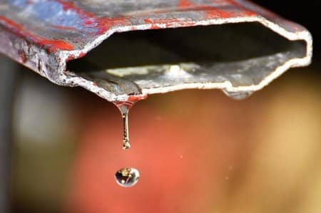
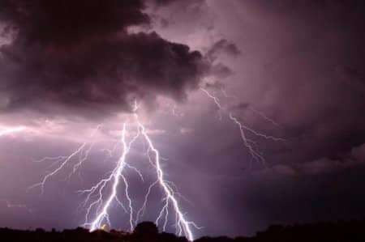
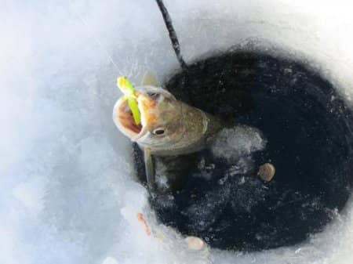

Вода: електропровідність і теплопровідність. Одиниці вимірювання електропровідності води
Опубліковано: 31-01-2021
Хто знає формулу води ще з часів шкільної пори? Звичайно ж, всі. Ймовірно, що з усього курсу хімії у багатьох, хто потім не вивчає її спеціалізовано, тільки і залишається знання того, що означає формула H 2 O. Але зараз ми максимально докладно і глибоко постараємося розібратися, що таке вода? Які її головні властивості і чому саме без неї життя на планеті Земля неможлива.
Вода як речовина
Молекула води, як ми знаємо, складається з одного атома кисню і двох атомів водню. Її формула записується так: H 2 O. Дана речовина може мати три стани: тверде - у вигляді льоду, газоподібний - у вигляді пари, і рідке - як субстанція без кольору, смаку і запаху. До речі, це єдина речовина на планеті, яка може існувати у всіх трьох станах одночасно в природних умовах. Наприклад: на полюсах Землі - лід, в океанах - це вода, а випаровування під сонячними променями - це пар. У цьому сенсі вода аномальна.
Ще вода - найпоширеніша речовина на нашій планеті. Вона покриває поверхню планети Земля майже на сімдесят відсотків - це і океани, і численні річки з озерами, і льодовики. Велика частина води на планеті солона. Вона непридатна для пиття і для ведення сільського господарства. Прісна вода становить усього два з половиною відсотка від усієї кількості води на планеті. Вода - це дуже сильний і якісний розчинник. Завдяки цьому хімічні реакції у воді проходять з величезною швидкістю. Це ж її властивість впливає на обмін речовин у людському організмі. Загальновідомий факт, що тіло дорослої людини на сімдесят відсотків складається з води. У дитини цей відсоток ще вищий. До старості цей показник падає з сімдесяти до шістдесяти відсотків. До речі, ця особливість води наочно демонструє, що основою життя людини є саме вона. Ніж води в організмі більше - тим здоровіше, активніше і молодше. Тому вчені та медики всіх країн невпинно твердять, що пити треба багато. Саме воду в чистому вигляді, а не замінники у вигляді чаю, кави або інших напоїв
Вода формує клімат на планеті, і це не перебільшення. Теплі течії в океані обігрівають цілі континенти. Це відбувається за рахунок того, що вода поглинає дуже багато сонячного тепла, а потім віддає його, коли починає остигати. Так вона регулює температуру на планеті. Багато вчених говорять, що Земля давно б охолола і стала каменем, якщо б не наявність такої кількості води на зеленій планеті.

Властивості води
У води є багато дуже цікавих властивостей. Наприклад, вода - це саме рухоме речовина після повітря. Зі шкільного курсу багато хто, напевно, пам'ятають таке поняття, як кругообіг води в природі. Наприклад: струмочок випаровується під впливом прямих сонячних променів, перетворюється у водяну пару. Далі, цей пар допомогою вітру, переноситься куди-небудь, збирається в хмари, а то і в грозові хмари й випадає в горах у вигляді снігу, граду або дощу. Далі, з гір струмочок знову збігає вниз, частково випаровуючись. І так - по колу - цикл повторюється мільйони разів. Також у води дуже висока теплоємність. Саме з-за цього водойми, тим більше океани, дуже повільно остигають при переході від теплого сезону або часу доби до холодного. І навпаки, при підвищенні температури повітря вода дуже повільно нагрівається. За рахунок цього, як і згадувалося вище, вода стабілізує температуру повітря на всій нашій планеті.
Після ртуті вода володіє найвищим значенням поверхневого натягу. Не можна не помітити, що випадково пролита на рівній поверхні крапля іноді стає значним цяткою. В цьому проявляється тягучість води. Ще одна властивість проявляється у неї при зниженні температури до чотирьох градусів. Як тільки вода остигає до цієї позначки, вона стає легше. Тому лід завжди плаває на поверхні води і застигає скоринкою, покриваючи собою річки і озера. Завдяки цьому у водоймах, які замерзали взимку не вимерзає риба.
Вода, як провідник електроенергії
Спочатку варто дізнатися про те, що таке електропровідність (води, в тому числі). Електропровідність - це здатність будь-якої речовини проводити через себе електричний струм. Відповідно, електропровідність води - це можливість води проводити струм. Ця здатність безпосередньо залежить від кількості солей і інших домішок у рідині. Наприклад, електропровідність дистильованої води майже зведена до мінімуму з-за того, що така вода очищена від різних добавок, які так потрібні для доброї електропровідності. Відмінний провідник струму - це вода морська, де концентрація солей дуже велика. Ще електропровідність залежить від температури води. Ніж значення температури вище - тим більша електропровідність води. Ця закономірність виявлена завдяки множинним дослідів вчених-фізиків.

Вимірювання електропровідності води
Є такий термін - кондуктометрія. Так називають один з методів електрохімічного аналізу, заснованого на електричної провідності розчинів. Застосовують цей метод для визначення концентрації в розчинах солей або кислот, а також для контролю складу деяких промислових розчинів. Вода володіє амфотерними властивостями. Тобто в залежності від умов вона здатна виявляти як кислотні, так і основні властивості - виступати і в ролі кислоти, і у ролі підстави.
Прилад, який використовують для цього аналізу, має дуже схожу назву - кондуктометр. З допомогою кондуктометра вимірюється електропровідність електролітів, що знаходяться в розчині, аналіз якого ведеться. Мабуть, варто пояснити ще один термін - електроліт. Це речовина, яка при розчиненні або плавленні розпадається на іони, за рахунок чого згодом проводиться електричний струм. Іон - це електрично заряджена частинка. Власне, кондуктометр, взявши за основу визначені одиниці електропровідності води, що визначає її питому електропровідність. Тобто він визначає електропровідність конкретного обсягу води, взятої за початкову одиницю. Ще до початку сімдесятих років минулого століття для позначення провідності електрики використовували одиницю виміру 'мо', це була похідна від іншої величини - Ома, що є основною одиницею опору. Електропровідність - це величина, обернено пропорційна опору. Зараз же вона вимірюється в Сименсах. Отримала свою назву ця величина в честь вченого-фізика з Німеччини Вернера фон Сіменса.
Сіменс
Сіменс (може позначатися як См, так і S) - це величина, зворотна Ому, що є одиницею вимірювання електричної провідності. Один См дорівнює електричної провідності будь-якого провідника, опір якого дорівнює 1 Ом. Виражається Сіменс через формулу:
1 См = 1 : Ом = А : В = кг -1 ·м -2 ·с3А2
А - ампер,
В - вольт.

Теплопровідність води
Тепер поговоримо про те, що таке теплопровідність. Теплопровідність - це здатність будь-якої речовини переносити теплову енергію. Суть явища полягає в тому, що кінетична енергія атомів і молекул, що визначають температуру даного тіла або речовини, передається іншому тіла або речовини при їх взаємодії. Інакше кажучи, теплопровідність - це теплообмін між тілами, речовинами, а також між тілом і речовиною. Теплопровідність у води також дуже висока. Люди щодня використовують цю властивість води, самі того не помічаючи. Наприклад, наливаючи холодну воду у тару і охолоджуючи в ній напої або продукти. Холодна вода забирає тепло у пляшки, контейнери, натомість віддаючи холод, можлива і зворотна реакція. Тепер це ж явище легко можна уявити у масштабі планети. Океан нагрівається протягом літа, а потім - з настанням холодів, повільно остигає і віддає своє тепло повітрю, тим самим обігріваючи материки. Охолонувши за зиму, океан починає дуже повільно нагріватися в порівнянні з землею і віддає свою прохолоду змученим від літнього сонця материках.

Щільність води
Вище розповідалося про те, що риба живе у водоймі взимку завдяки тому, що вода застигає скоринкою по всій їх поверхні. Ми знаємо, що в лід вода починає перетворюватися при температурі нуль градусів. З-за того, що густина води більше, ніж щільність льоду, лід спливає і застигає на поверхні.
Що таке окислювально-відновні властивості води
Також вода при різних умовах здатна бути і окислювачем, і відновником. Тобто вода, віддаючи свої електрони, заряджається позитивно і окислюється. Або ж набуває електрони і заряджається негативно, значить, відновлюється. У першому випадку вода окислюється і називається мертвою. Вона має дуже потужними бактерицидними властивостями, тільки от пити її не треба. У другому випадку вода жива. Вона бадьорить, стимулює організм на відновлення, несе енергію клітинам. Різниця між цими двома властивостями води виражається в терміні 'окисно-відновний потенціал'.

З чим вода здатна реагувати
Bода здатна реагувати майже з усіма речовинами, які існують на Землі. Єдине, що для виникнення цих реакцій потрібно забезпечити відповідну температуру і мікроклімат. Наприклад, при кімнатній температурі вода відмінно реагує з такими металами, як натрій, калій, барій - їх називають активними. З галогенами - це фтор, хлор. При нагріванні вода відмінно реагує з залізом, магнієм, вугіллям, метаном. За допомогою різних каталізаторів вода вступає в реакцію з амідами, ефіри карбонових кислот. Каталізатор - це речовина, немов би підштовхує компоненти до взаємної реакції, прискорює її.
Є вода де-небудь ще, крім Землі
Поки що ні на одній планеті Сонячної системи, крім Землі, води не виявлено. Так, припускають про її присутність на супутниках таких планет-гігантів, як Юпітер, Сатурн, Нептун і Уран, але поки точних даних у вчених немає. Існує ще одна гіпотеза, поки не перевірена остаточно, про підземних водах на планеті Марс і на супутнику Землі - Місяця. Щодо Марса взагалі висунуто ряд теорій про те, що колись на цій планеті був океан, і його можлива модель навіть проектувалася вченими.
Поза Сонячною системою існує безліч великих і малих планет, де, за припущенням вчених, може бути вода. Але поки немає ні найменшої можливості переконатися в цьому, напевно.
Як використовують тепло - і електропровідність води в практичних цілях.Зважаючи на те, що вода володіє високим значенням теплоємності, її використовують в теплотрасах в якості теплоносія. Вона забезпечує передачу тепла від виробника до споживача. Як відмінний теплоносій воду використовують і багато атомні електростанції. У медицині лід використовують для охолодження, а пар - для дезінфекції. Так само лід використовують в системі громадського харчування. У багатьох ядерних реакторах воду використовують як уповільнювач, для успішного протікання ланцюгової ядерної реакції. Воду під тиском використовують для розколювання, проламати і навіть для різання гірських порід. Це активно використовується при будівництві тунелів, підземних приміщень, складів, метро.
Висновок
Зі статті випливає, що вода за своїми властивостями і функціями - саме незамінне та вражаюче речовина на Землі. Чи залежить життя людини або будь-якого іншого живої істоти на Землі води? Безумовно, так. Чи сприяє це речовина ведення наукової діяльності людиною? Так. Чи має вода електропровідність, теплопровідність і іншими корисними властивостями? Відповідь теж 'так'. Інша справа, що води на Землі, а тим більше чистої води, все менше і менше. І наше завдання - зберегти і забезпечити її (а значить, і всіх нас) від зникнення.
http://yrok.pp.ua/serednya-osvta/8861-voda-elektroprovdnst-teploprovdnst-odinic-vimryuvannya-elektroprovdnost-vodi.html